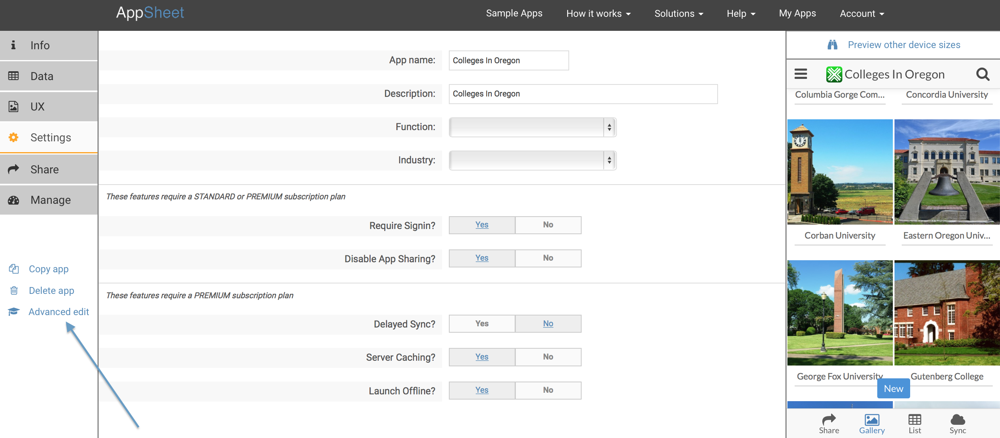
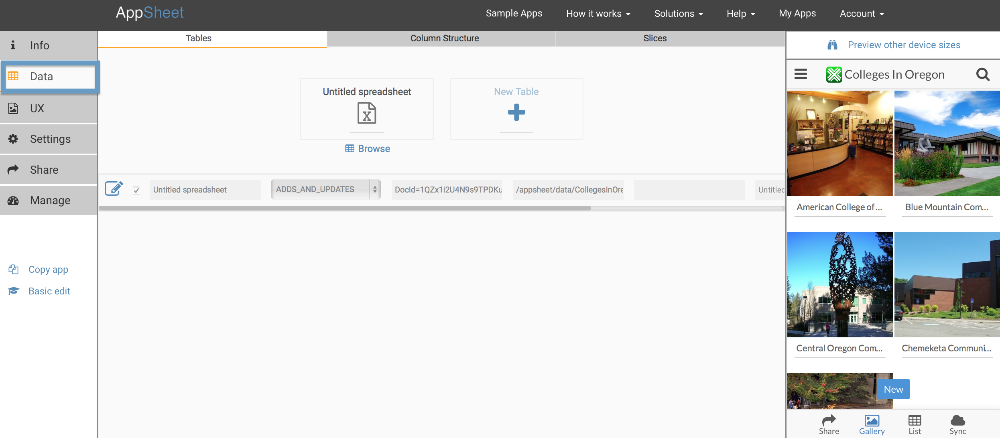
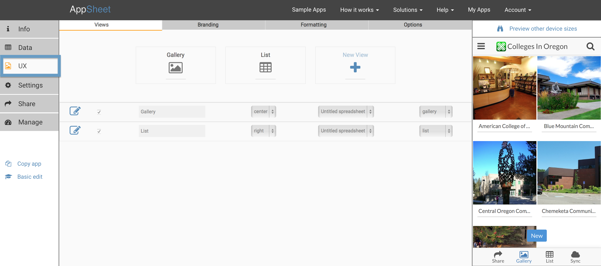
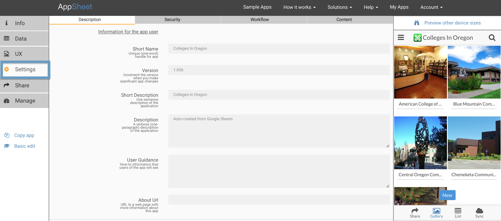

Advanced app customizations – AppSheet
For richer apps or for more advanced app features, the Advanced Editor comes in handy. You can get to it by clicking the Advanced Editor link at the top of the Basic Editor.

The Advanced Editor keeps the three Data, UX, and Settings sections-- each one has at least three subsections.
Data

The data section contains the three subsections Tables, Column Structure, and Slices. You can add multiple spreadsheets to your app, adjust editing permissions, and more via the Tables tab. The Column Structure tab allows you to make changes to the structure of your spreadsheet data. The Slices tab is where you specify slices (or filters) on your data.
UX

The UX tab contains four subsections, Views, Branding, Formatting, and Options. Controls is where you can choose the different views for your apps. Branding allows you to add your own application icons and background screens. The Style tab enables you to choose different customizations such as font and color themes. Last, Rules is where you specify change alerts/workflow rules.
Settings

Settings contains the four subsections Description, Security, Workflow, and Content. Description is where you can add various informational aspects to your app. On the Security tab you can make authentication changes to your app. The Content tab allows you to decide various miscellaneous aspects of your app, like whether you want to be able to launch offline or whether you'd like saved changes to automatically sync to the backend spreadsheet.
A few other things you can do with the Advanced Editor
With the Advanced Editor, you can make much more specialized customizations to your app.
- You can add multiple spreadsheets (i.e. multiple tables) to your app. To see an example of this feature, look at the Order Capture sample.
- You can add multiple table slices to your app. To see an example of this feature, look at the Marketing Event sample.
- You can examine and modify the column structure of your data. To see an example of this feature, look at the Consultant sample.
- You can define extra data views for your app. To see an example of this feature, look at the Contact Directory sample.
- You can modify various advanced settings.
Unlike the Basic Editor, the Advanced Editor does not automatically save changes. You have to explicitly click the Save button.
In the next section, we'll show you how to install and launch your apps.